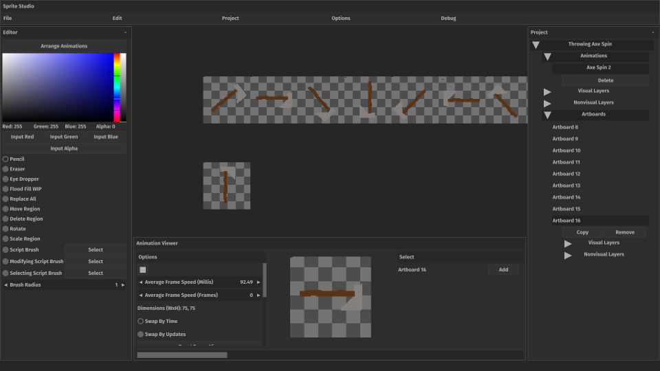
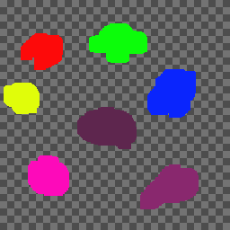
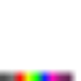
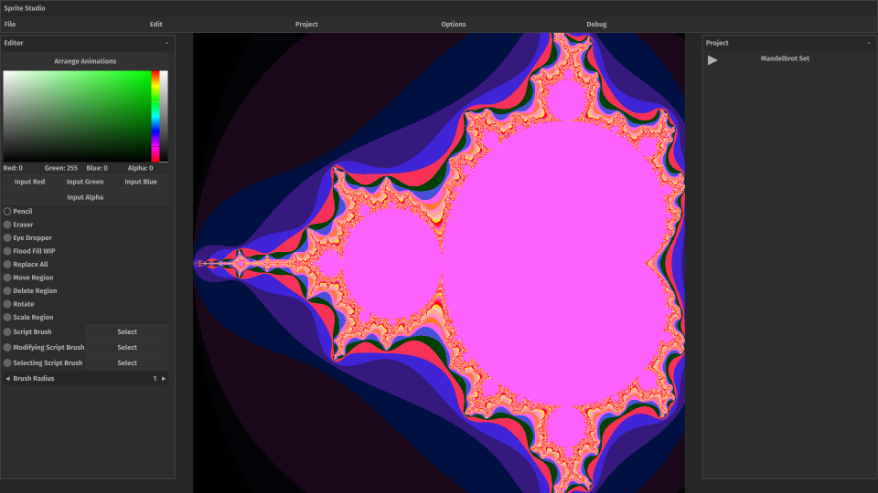
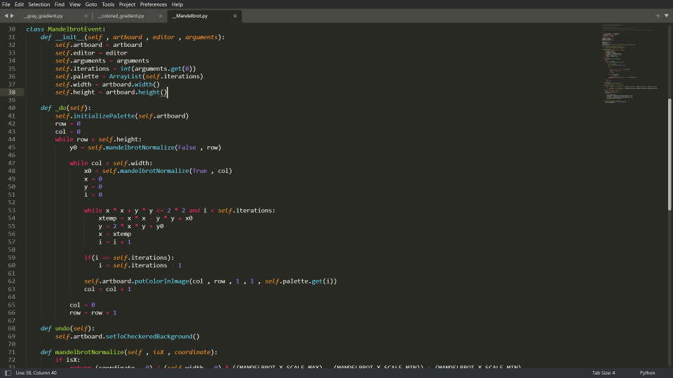
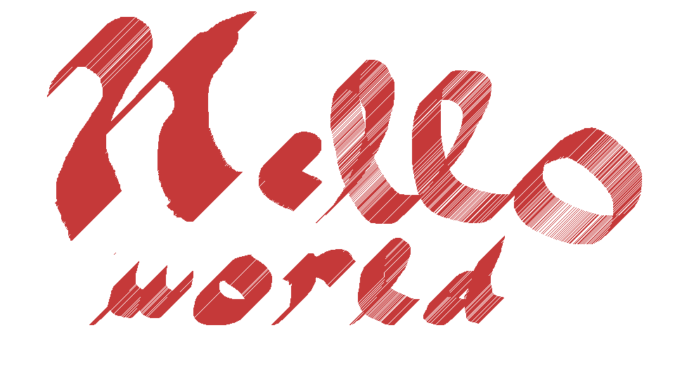
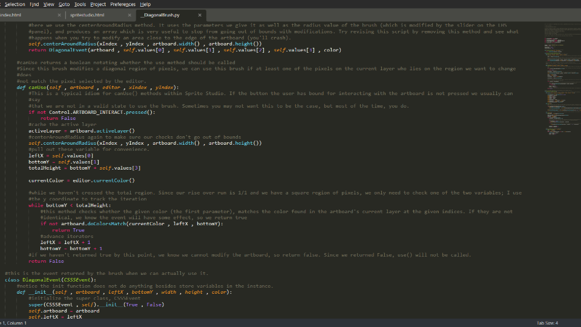

COLDSTEEL's Sprite Studio (or just Sprite Studio) is a 2D raster graphic creation tool. With it, you can create images for video games, websites, and other applications. It is intended primarily for 2D game development. Sprite Studio supports indexed rendering, which uses a unique internal representation of images along with a palette of colors to display images. This format allows the programmer or artist to change the colors of the image on the fly by changing the palette at runtime.
Sprite Studio also supports animations. This is facilitated by Sprite Studio's Artboard, which is an individual image. Multiple Artboards are joined together to form an animation, and then 'played' in sequence according to the parameters the user sets. A project may have one or more artboards. The artboards are lined up when they are part of an animation. The user can choose from a variety of animation options like playback speed and metric. The user can also make specific frames last longer than others. Animations are exported as .ctsa files which can be loaded by my own FOSS library, STEEL's Sprites, which is bundled with each copy of Sprite Studio. STEEL's Sprites is written in both Java and C. I plan to create easier integrations for Unity and Unreal once I learn those technologies more deeply.
Sprite Studio uses a palette system to color its images. Basically, there's an image called a palette that contains color values. Then, each artboard's 'pixel's' channel values (the numbers that usually make up red, green, blue, and alpha) are two x and y indices instead. These two indices are used to get the color that should go at that position in the artboard from the palette. So, to get a color for an artboard at some position, you take the pixel at that position, read its channel values (an x and y index), and go into the palette at that x and y index at which you'll find a color, which is then rendered at the current position in the artboard.
This image was created in Sprite Studio:
And this image is the palette for that image. It was exported from Sprite Studio:
This image is the same image as the first, but this time it's exported in its original format (pixels are x, y coordinates):
You can see the blobs from the first image, but they're mostly dark. Thats because each pixel is basically a dark gray color when you represent this type of image as color. The powerful thing is that we can change the palette at runtime, and every pixel in an image that points to that color will also change. You could also exchange the whole palette out for another one and completely change the color of the image.
Sprite Studio also integrates with the Steam Workshop and has a huge amount of extensibility powered by Python. You can write scripts that interact with Sprite Studio via my APIs to create new brushes, exporters, and macro-commands. Then, you can share your script or download other peoples' from the Workshop. Naturally, you should vet a script from the Workshop before using it because it's just Python at the end of the day. Below are some images showing what the scripts may look like and an example of what can be done with them:



The final feature I want to mention briefly is nonvisual layers. The idea here is that we can embed additional information in an image via layers which contain pixels that don't represent colors-but something else. What that something else means is determined by the user. You could for example include pixel-perfect hitbox information in a nonvisual layer. The layer is exported as a unique image alongside the colored image. Overlay both images in your game, and use compute shaders to determine if the hitbox layer and some other entity's hitbox overlap. In practice, this feature needs more development but it may prove useful-especially if you plan to use it from the beginning of your application's development.
Next, and finally, I want to talk about my planned features for Sprite Studio's 1.0 release. I want to overhaul:
- The UI so it is less reliant on words and uses more images to represent things like brushes,
- The selector brushes. They'll be combined into one brush that does everything,
- Blending. Currently, blending doesn't happen when you are mixing translucent colors,
- Bugs, of which there are a great deal,
- I want to include some form of AI integration. Users would be able to generate sprite sheets offline in Sprite Studio using AI which would be converted to Sprite Studio's formats. Alternatively if the user's computer can't support it, they could generate them through the cloud, for a fee,